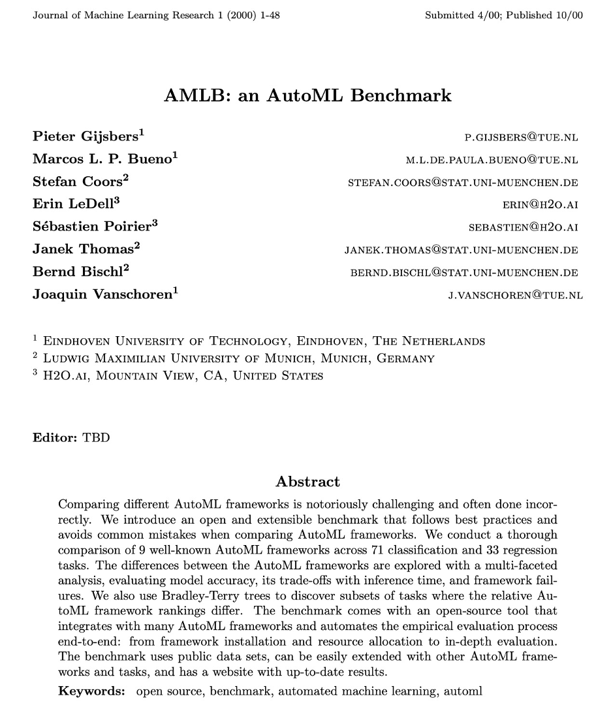

# Common Libraries
import numpy as np
import pandas as pd
import sklearn.metrics
from sklearn.model_selection import train_test_split
# Framework library
from sklearn.linear_model import LinearRegression
# Reading data
data = pd.read_csv('diamantes.csv')
target = data['price']
data = data.drop(['price'],axis=1)
# Specific preprocessing
data = pd.get_dummies(data)
# Divide the data into train and test
X_train, X_test, y_train, y_test = train_test_split(data, target, test_size= .2,random_state=25)
# Setup framework
modelo = LinearRegression()
# Fit model
modelo.fit(X_train, y_train)
# Get the predictions of the final ensemble
train_predictions = modelo.predict(X_train)
test_predictions = modelo.predict(X_test)
# Evaluate the predictions : R2 & RMSE
print("Train R2 score:", sklearn.metrics.r2_score(y_train, train_predictions))
print("Train RMSE score:", sklearn.metrics.mean_squared_error(y_train, train_predictions, squared=False))
print("Test R2 score:", sklearn.metrics.r2_score(y_test, test_predictions))
print("Test RMSE score:", sklearn.metrics.mean_squared_error(y_test, test_predictions, squared=False))Automated Machine Learning & Causality
Motivación
- Pero primero agradecimiento
- De qué hablar?
- Conversación con Hamzah Haji en Panamá
- Actualización del Curso de Data Mining
- Cómo ha cambiado en el último año ?
Contenidos
- Automated Machine Learning
- Causalidad y Machine Learning
La Idea Fundamental de AutoML
- Permitirle a alguien con conocimientos básicos de Estadística o de Data Mining correr modelos altamente competitivos
- Pueden pensar en esto como un proceso de democratización de Data Science
- Cualquiera puede usarla, no solo los expertos
La Idea Fundamental de AutoML
- Qué quiero decir por conocimientos básicos?
- Alguien que pueda correr una regresión lineal
- … en Python o en R.
- Qué quiere decir altamente competitivos?
- Un modelo con un error más bajo del que jamás podría lograr un profesor de INCAE (e.g. CQ)
Pequeña digresión
- Anécdota sobre uso de R en INCAE
- Circa 1999-2000
Pequeña digresión
Juramento personal
- No voy a volver a usar R jamás de los jamases
- Voy a usar StatTools/Excel, Gretl, Jamovi, RapidMiner
- y en Noviembre de 2022 ocurrió algo maravilloso en el mundo de la tecnología …
TidyModels Playlist
Auto-ML
Auto-ML
- Definición: “Automated machine learning, also referred to as automated ML or AutoML, is the process of automating the time-consuming, iterative tasks of machine learning model development.”
- “It allows data scientists, analysts, and developers to build ML models with high scale, efficiency, and productivity all while sustaining model quality.”
Componentes
- Hyperparameter Optimization
- Meta-Learning (Warm-start)
- Ensembling
Hyparameter Optimization
- La mayoría de los algoritmos que usamos tienen muchos hyper-parametros que optimizar
- Randall Olson: “Los valores default típicamente no son óptimos”
HPO: Grids
Xgboost
HPO: Bayesian Optimization
Meta-Learning
- La idea aquí es usar la experiencia que tenemos para optimizar distintos algoritmos
- Basandonos en las características del problema que queremos resolver, de la hoja de datos a mano
- No partir de cero
Meta-Learning (AutoSklearn)
Ensembling
- No hay algoritmo perfecto
No-Free Lunch
Ensembling
- Después de optimizar los hyperparametros, combinamos todos los modelos
- Puede ser algo tan trivial como una combinación lineal obtenida con una regresión lineal
- Puede ser algo mas avanzado como Lasso
AutoSklearn 1.0
Ventajas de Auto-ML (Olson et al, 2018)
- Mejora notable del desempeño de diferentes algoritmos una vez que los ajustamos correctamente
- En manos de un novato, como ustedes o como yo mismo a veces, super-performers como SVM y Xgboost tienen un desempeño mediocre
Ventajas
- No Free-Lunch Theorem (hay que probarlos todos)
- Tedioso, error-prone (ganancias en eficiencia extraordinarios)
- Transparencia/Reproducibilidad
Ejemplos Auto-ML
- H2o automl (R/Python - Open Source/Commercial)
- Amazon’s AutoGluon (Python - Open Source)
- Microsoft’s Flaml (Python - Open Source)
- Uber’s Ludwig (Python - Open Source)
- JADBio (Just Add Data - Comercial)
- DataRobot (Comercial)

Benchmarks
Benchmarks
- El ganador fue AutoGluon, pero casi todos los demas muy cerca
- Dejen mostrales un par de ejemplos usando AutoGluon
- Recuerden la promesa de AutoML: Permitirle a alguien con conocimientos básicos de Estadística o de Data Mining correr modelos altamente competitivos
Ejemplo 1 : Diamantes
- Vamos a pronosticar el precio de un diamantes como función de sus caracteristicas
- Esta es una hoja de datos benchmark en Data Mining
- Todo el mundo la conoce
Linear Regression
Linear Regression
# Common Libraries
import numpy as np
import pandas as pd
import sklearn.metrics
from sklearn.model_selection import train_test_split
# Framework library
from sklearn.linear_model import LinearRegression
# Reading data
data = pd.read_csv('diamantes.csv')
target = data['price']
data = data.drop(['price'],axis=1)
# Specific preprocessing
data = pd.get_dummies(data)
# Divide the data into train and test
X_train, X_test, y_train, y_test = train_test_split(data, target, test_size= .2,random_state=25)
# Setup framework
modelo = LinearRegression()
# Fit model
modelo.fit(X_train, y_train)
# Get the predictions of the final ensemble
train_predictions = modelo.predict(X_train)
test_predictions = modelo.predict(X_test)
# Evaluate the predictions : R2 & RMSE
print("Train R2 score:", sklearn.metrics.r2_score(y_train, train_predictions))
print("Train RMSE score:", sklearn.metrics.mean_squared_error(y_train, train_predictions, squared=False))
print("Test R2 score:", sklearn.metrics.r2_score(y_test, test_predictions))
print("Test RMSE score:", sklearn.metrics.mean_squared_error(y_test, test_predictions, squared=False))AutoGluon
# Common libraries
import numpy as np
import pandas as pd
from sklearn.model_selection import train_test_split
import sklearn.metrics
# Framework library
from autogluon.tabular import TabularDataset, TabularPredictor
# Reading data
data = pd.read_csv('/Users/carlosq/Desktop/automl/diamantes.csv')
# Divide the data into train and test (including dependent variable; no separation)
train_data, test_data = train_test_split(data, test_size= .2,random_state=25)
# Further process dataset
train_data = TabularDataset(train_data)
test_data = TabularDataset(test_data)
y_train = train_data['price']
y_test = test_data['price']
# Set up framework
automl = TabularPredictor(label='price', path='agModels')
# Fit the model
automl.fit(train_data,time_limit=120,num_cpus=8)
# View the models found by auto-sklearn
automl.leaderboard(test_data, silent=True)
# Get the predictions of the final ensemble
train_predictions = automl.predict(train_data)
test_predictions = automl.predict(test_data)
# Evaluate the predictions : R2 & RMSE
print("Train R2 score:", sklearn.metrics.r2_score(y_train, train_predictions))
print("Train RMSE score:", sklearn.metrics.mean_squared_error(y_train, train_predictions, squared=False))
print("Test R2 score:", sklearn.metrics.r2_score(y_test, test_predictions))
print("Test RMSE score:", sklearn.metrics.mean_squared_error(y_test, test_predictions, squared=False))AutoGluon
# Common libraries
import numpy as np
import pandas as pd
from sklearn.model_selection import train_test_split
import sklearn.metrics
# Framework library
from autogluon.tabular import TabularDataset, TabularPredictor
# Reading data
data = pd.read_csv('/Users/carlosq/Desktop/automl/diamantes.csv')
# Divide the data into train and test (including dependent variable; no separation)
train_data, test_data = train_test_split(data, test_size= .2,random_state=25)
# Further process dataset
train_data = TabularDataset(train_data)
test_data = TabularDataset(test_data)
y_train = train_data['price']
y_test = test_data['price']
# Set up framework
automl = TabularPredictor(label='price', path='agModels')
# Fit the model
automl.fit(train_data,time_limit=120,num_cpus=8)
# View the models found by auto-sklearn
automl.leaderboard(test_data, silent=True)
# Get the predictions of the final ensemble
train_predictions = automl.predict(train_data)
test_predictions = automl.predict(test_data)
# Evaluate the predictions : R2 & RMSE
print("Train R2 score:", sklearn.metrics.r2_score(y_train, train_predictions))
print("Train RMSE score:", sklearn.metrics.mean_squared_error(y_train, train_predictions, squared=False))
print("Test R2 score:", sklearn.metrics.r2_score(y_test, test_predictions))
print("Test RMSE score:", sklearn.metrics.mean_squared_error(y_test, test_predictions, squared=False))Live demo
Ejemplo # 2: Colon Cancer
- Quería escoger un ejemplo que ilustrara como un novato podía usar AutoML y obtener resultados sorprendentes …
- … aunque no entendiera como los obtuvo
- Yo no se nada, pero ayudenme a decir NADA sobre Machine Learning aplicada a imagenes
- Neural Networks (Deep Learning) es el go-to-guy
- Yo he usado muy poco Neural Networks
Benign

Cancer

AutoGluon
# Import relevant libraries
import pandas as pd
from sklearn.model_selection import train_test_split
from autogluon.multimodal import MultiModalPredictor
# Import 'dataset' (list of addresses for images and labels)
images = pd.read_csv('/Users/carlosq/Downloads/coloncancer/lista_imagenes.csv')
# Split data intro train and test sets
train_data_path, test_data_path = train_test_split(images,train_size=0.8,random_state=1234)
# Set up model
predictor = MultiModalPredictor(
label="label",
path="/Users/carlosq/Downloads/coloncancer/resultados"
)
# Fit the models. Time limit = 600 seconds
predictor.fit(train_data=train_data_path, time_limit=600)
# Predict test set and evaluate performance
scores = predictor.evaluate(test_data_path, metrics=["accuracy"])
print('Test Accuracy: %.3f' % scores["accuracy"])
# Predict test set and evaluate performance
scores = predictor.evaluate(test_data_path, metrics=["accuracy"])
print('Test Accuracy: %.3f' % scores["accuracy"])El resultado
Dilema
- Estos resultados plantean un dilema importante para mi clase
- Qué hago con ella?
- No necesito 18 sesiones para enseñarles a los estudiantes como escribir esos dos programas que les he mostrado
- Dos consideraciones
Consideración # 1
- Se vale usar un algoritmo sin entenderlo
- Integral definida
Consideración # 2
Qué hice?
- Comenzando con el último curso que enseñé estructure el curso en tres partes:
- Modelos Básicos (lineal, knn, arboles, naive bayes)
- Modelos Avanzados (random forest, xgboosting, superlearners, auto-ml)
- Interpretabilidad. Fairness. Otras consideraciones éticas.
Causal Machine Learning
Otra digresión
- Cómo comence a enseñar causalidad en INCAE?
- Siempre tuve un par de sesiones en Métodos Cuantitativos
- Pero el esfuerzo en serio comenzo durante la pandemia
Otra digresión
Transición: Trabajo de Grupo # 4 (Julio 2023)
Transición: Trabajo de Grupo # 4 (Julio 2023)
Transición: Trabajo de Grupo # 4 (Julio 2023)
Transición: Trabajo de Grupo # 4 (Julio 2023)
- Esta fue una asignación ‘injusta’ porque yo no les enseñe a los estudiantes cómo resolver un problema semejante
- Durante el curso les enseñe a pronosticar una variable (numérica o binomial) como función de una batería de variables mixtas
- Este trabajo les pide algo fundamentalmente nuevo
- Les pide analizar los efectos de un cambio en una variable sobre la que tenemos pleno control, la tasa de interés
- Es el análisis de una intervención de marketing
- Este no es un problema de predicción. Es un problema de causalidad.
Caso Clásico
\[ Y = T*\theta + \epsilon \]
Y es la variable que nos interesa. Por ejemplo, compras.
T es la intervención. Podría ser un cupón, un descuento, una llamada
\(\epsilon\) es un error.
\(\theta\) es el efecto. Aquí se supone constante.
Este es el caso de un experimento aleatorio bien diseñado. El tratamiento, T, ha sido asignado completamente al azar.
No necesitamos Machine Learning. Estadística 101 basta.
Variación Caso Clásico
- \[ Y = T*\theta + g(X) + \epsilon \]
- T todavía es asignado al azar, pero
- La variable Y depende de la intervención, pero también de otras variables X
- X podría ser ingreso por ejemplo
- Típicamente la función g( ) se asume lineal
- Podríamos seguir utilizando estadística básica para estimar el efecto \(\theta\)
- Pero hay ganancias en eficiencia (menor variabilidad) de tomar en cuenta X
Unconfoundness
- \[ Y = T*\theta + g(X) + \epsilon \]
- \[ T = m(X) + \eta \]
- El tratamiento, T, ya no es asignado al azar
- Ahora depende de la variable X. El cupón se le envía con más frecuencia a los clientes de niveles bajos de ingreso (o viceversa)
- La segunda ecuación se conoce como Propensity Score. Mide que tan probable es que un cliente reciba la intervención (el tratamiento)
Unconfoundness
- Usualmente las funciones g( ) y m( ) se asumen lineales. La primera es una regresión lineal. La segunda una regresión logística.
- Y aquí esta potencialmente la ventaja de usar Machine Learning.
- Nada en la teoría nos dice que las funciones son lineales.
- Pero modelar g( ) y m( ) es un problema de predicción. Machine Learning destaca en ese tipo de tareas.
- Este tipo de modelos se llaman Double Machine Learning Models
Variación Unconfoundness
- \[ Y = T*\theta(X) + g(X) + \epsilon \]
- \[ T = m(X) + \eta \]
- Ahora el efecto depende de X
- No todas los clientes responden de igual forma a una intervención. Los clientes con ingreso alto, por ejemplo, podrían ser poco susceptible a la intervención, pero los de bajo ingreso no.
- Esto se conoce como efectos heterogeneos y da lugar a la posiblidad de intervenciones personalizadas
EconML
# Load relevant libraries
import pandas as pd
from econml.dml import CausalForestDML
# Read dataset
datos = pd.read_csv('/Users/carlosq/Desktop/automl/masterminds/het1.csv')
y = datos['y']
T = datos['t']
X = datos.drop(['y','t'],axis=1)
# Set up the model and estimate
est = CausalForestDML(discrete_treatment=True)
est.fit(y, T, X=X, W=None)
# Average Treatment Effect
est.ate_
# Variable importance (to explain heterogeneity)
est.feature_importances_
# What is Theta for each individual in a test set
Xtest = pd.read_csv('/Users/carlosq/Desktop/automl/masterminds/het2.csv')
theta_test=est.effect(Xtest)EconML
# Load relevant libraries
import pandas as pd
from econml.dml import CausalForestDML
# Read dataset
datos = pd.read_csv('/Users/carlosq/Desktop/automl/masterminds/het1.csv')
y = datos['y']
T = datos['t']
X = datos.drop(['y','t'],axis=1)
# Set up the model and estimate
est = CausalForestDML(discrete_treatment=True)
est.fit(y, T, X=X, W=None)
# Average Treatment Effect
est.ate_
# Variable importance (to explain heterogeneity)
est.feature_importances_
# What is Theta for each individual in a test set
Xtest = pd.read_csv('/Users/carlosq/Desktop/automl/masterminds/het2.csv')
theta_test=est.effect(Xtest)Average Treatment Effect
- est.ate_ = -0.00062109
- Efecto promedio es 0, pero queda la duda sobre la posibilidad de efectos heterogeneos
- est.feature_importances_
- [0.03 , 0.94, 0.00, 0.00, 0.01]
Efectos Heterogeneos (Training Set)
Efectos Heterogeneos (Test Set)
Algunas Referencias
- Automated Machine Learning. Frank Hutter et al.
- Hyperparameter Tuning for Machine and Deep Learning with R. Eva Bartz et al.
- AutoML - Automated Machine Learning. An Online Course. https://ki-campus.org/courses/automl-luh2021
- Machine Learning-based Causal Inference. https://bookdown.org/stanfordgsbsilab/ml-ci-tutorial/